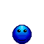

For this project, I will be writing articles about my thoughts and philosophies on life. I have had many experiences in life and many opportunities to learn. So, I will be sharing my meditations.

Below is a news feed from Yahoo News; so, you can stay informed.
Share This Page
Tweetpowered by Surfing Waves